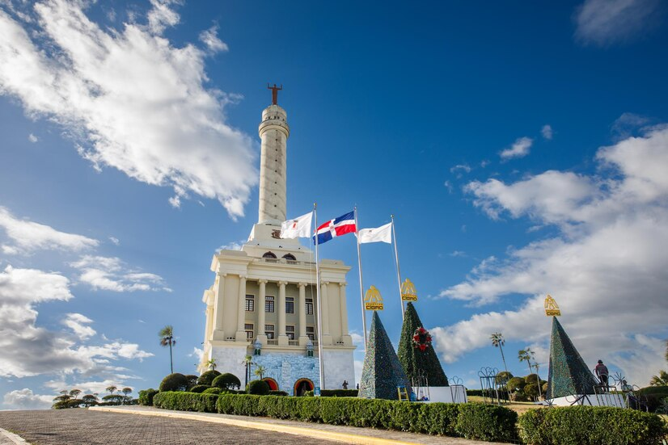

La creación de una Dirección de Mercadeo dentro del ayuntamiento permitirá concentrar las funciones de la Dirección de Comunicación en áreas específicas como prensa, protocolo, eventos y relaciones públicas, dejando que la Dirección de Mercadeo se encargue de la promoción y fortalecimiento de la imagen institucional. Esto garantizará que todos los esfuerzos de mercadeo sean coherentes y efectivos en todos los canales de comunicación, especialmente en las plataformas digitales.
